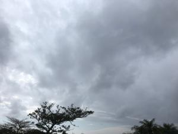
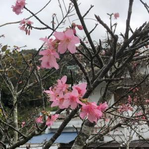
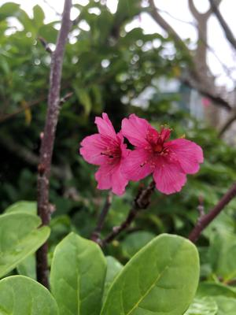

うるがいの話 ある日
最新: 動画ファイルの圧縮【うるがいの話 ある日】とは 一日だけのプログです
『うるがいの話』の最新一日だけのプログで、通信料が少なく経済的だ。カニの画像をクリックすると全ての日付が載る『うるがいの話』サイトを表示します
|
|
【うるがいの話】 うるがい(ｳﾙｶﾞｲ urugai)とは、『もずくがに』の名前でとても大きくなります。 |
|---|---|
|
|
【カミマヤーの話】 猫のことを方言でマヤーといいます。カミマヤー（kamimayaa）とは、神の猫のことです。 |
|
【たながぁの音楽】 たながぁ（ﾀﾅｶﾞｰ tanagaa）とは手長えびのことで、何種類かあり大きいのは車 エビぐらいになります。 |

|
【ぶながぁの話】 ぶながぁ(ﾌﾞﾅｶﾞｰ bunagaa)とは、赤い髪の毛、赤い身体、そして身長は１ｍ２０ｃｍ ぐらい、川の蟹を食べているの目撃された。場所は沖縄県国頭郡大宜味村のと ある村僕の隣近所に住んでいる爺さんから、聞いた話です。 |
|
|
【ギーマの話】 ギーマ(giima)とは、山原の里山に咲くスズランに似た、 花を付けます。実は食べられます、 気が付くと口の周りが紫になっています。 |
2023年02月12日 (日）動画ファイルの圧縮
17:26

かなり陽気な天気である。只今、半袖の肌着で窓を開け、風を入れてる。昨日
ＰＣ３号のⅮドライブのディスクに、パンクするぜ！と赤い色で警告される。
そろそろかなと思いながらの、その原因となる動画をキャプチャーしては格納
していた。さて、どう対応するか？と考えた。またまた、ネットを調べるとＰ
ｙｔｈｏｎ（パイソン）を利用すれば、大幅にディスクの容量を圧縮できるこ
とが分かった。そして、プログラムを作り、昨日からＰＣ３号で圧縮作業を開
始、いまだに続いている。そして今日は、普通の性能のＰＣ１号の動画ファイ
ルも圧縮することにし、朝から実行。さすがに、性能が低いだけあって遅い！
さらに、プログを作成しようとしたところ、文字入力も出来ない！。ＰＣ１号
の圧縮作業を中断する。
 
昼の３時前から、首里城公園へジョギングする、なんとか走れたホットする。
とある居酒屋の入り口の戸に、１万２千円相当のボトルが盗まれた、今後入店
の検査をしますと断りが書いてあった。達磨寺の方から、外人の若い男性が走
っていく、その後５百メートル先のバス亭（元のキリタン近く）に近づいたら
、マキシ向けのバスが停まった、するとその外人さんが乗っていく。バスに間
に合わせるため、走ったのだと分かった。芸大の通りに綺麗な赤い梅の花が、
３輪、ゲッ！、近づいてみると造花だった。
１７時２０分 ビットコインの総資産 ￥８、３１３（↑６０）